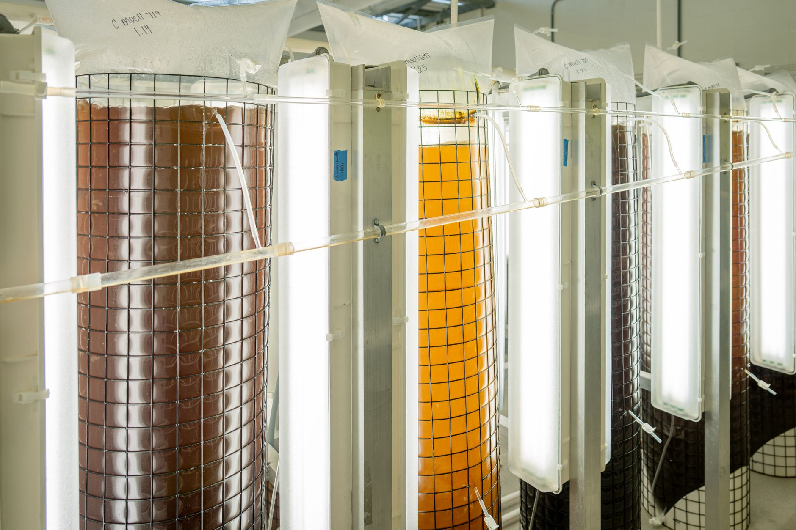

K-뷰티 세계 1위 목표, 원료 中 의존 70~85%가 발목

한국 화장품 수출액은 2024년 102억 달러로 사상 처음 100억 달러를 돌파했다. 글로벌 뷰티 시장 4위권에 진입했고, 산업계와 정부는 2035년 세계 1위를 공동 목표로 제시하고 있다. 브랜드 파워는 확인됐지만, 소재 공급망의 구조적 취약성이 동시에 드러나는 국면이다.
핵심 기능성 원료의 중국 의존도가 높다. 히알루론산은 전 세계 생산의 약 80%를 중국이 장악하며, 한국 화장품 업계 수입 중 중국산 비중은 70% 수준이다. 피부 미백·보습 원료로 광범위하게 쓰이는 나이아신아마이드의 중국산 비중은 85%를 넘고, 폴리글루타민산(PGA)·페룰산 등 효소·발효 원료도 중국산 비중이 50% 이상이다.
중국은 2023년 이후 갈륨·게르마늄·흑연 수출통제를 이중용도 품목으로 확장해왔다. 화장품 발효 원료와 효소류 일부도 이중용도 화학물질 범주에 포함될 수 있어, 수출통제 품목 확대 시 K-뷰티 원료 공급망도 직접 영향권에 들어간다. 바이오텍 발효 원료는 반도체 소재와 같은 공급망 논리로 움직이기 시작했다.
국내 발효·바이오 원료 기업 중 코스맥스바이오·콜마비앤에이치·에코시아 등이 국산 히알루론산·PGA 원료 개발에 착수했으나, 단가는 중국산 대비 1.5~2배 수준이다. 정부 소부장 지원 예산(2025년 1700억 원) 중 화장품 원료 항목은 5% 미만으로, 사실상 지원 사각지대에 방치돼 있다.
K-뷰티 브랜드는 글로벌 소비자가 선택하지만, 원료 공급망은 여전히 중국이 쥐고 있다. 수출 브랜드 파워와 원료 조달 리스크가 동시에 커지는 구조로, 세계 1위 목표를 달성하려면 원료 자립화 전략이 브랜드 전략과 동시에 설계돼야 한다.
화장품 원료는 반도체 소재처럼 이중용도 통제 품목으로 확장될 가능성이 있다. 발효·효소·고분자 원료는 바이오·의약품과 경계가 모호해 중국이 수출 심사를 강화할 경우 대응 시간이 극히 짧다. K-뷰티 기업들이 원료 조달을 소재 전략 차원에서 관리하지 않으면 2035년 목표는 원료 병목에서 걸린다.
국내 바이오·발효 원료 기업이 직접 수혜 구간에 들어선다. 코스맥스바이오·진코스텍·에코시아 등 국산 발효 원료 개발사는 K-뷰티 완성품 브랜드의 소재 국산화 전환 수요를 흡수할 수 있다. 인도·유럽산 히알루론산 원료 수입 대행 구조도 단기 대안으로 부상한다.
일본 화장품 원료 기업(아지노모토·시세이도 화학)도 반사이익을 노린다. 중국산 나이아신아마이드의 공급 불안이 가시화될 경우 일본산 고순도 원료 전환 수요가 증가하며, 유럽 BASF·에보닉의 기능성 원료 공급 확대도 진행 중이다.
중국산 원료 중개 무역 구조에 의존해온 국내 원료 도매상과 소규모 ODM 업체들이 직접 타격을 받는다. 가격 경쟁력을 중국산 원가에 기반해온 업체들은 대체 소싱 비용 증가로 수익성이 하락한다.
브랜드 완성품 기업 중 원료 분산 조달 체계를 갖추지 못한 중소 K-뷰티 기업이 취약하다. LG생활건강·아모레퍼시픽은 자체 원료 연구소와 복수 공급망을 보유하지만, 연매출 500억 원 이하 중소 브랜드의 60% 이상은 단일 원료 공급처에 의존하는 구조다.
K-뷰티 원료 구매담당자라면 지금 당장 주요 기능성 원료의 원산지별 의존도를 품목별로 분리 파악해야 한다. 히알루론산·나이아신아마이드·효소 발효 원료 각각의 중국산 비중이 50%를 넘는다면, 최소 1개 이상의 비중국산 대체 공급처를 사전 등록해 두는 것이 기본이다.
투자자 관점에서는 국내 발효·바이오 원료 기업 중 화장품 원료 매출 비중이 30% 이상인 곳을 분리 추적할 필요가 있다. 소부장 지원에서 화장품 원료가 빠져 있는 만큼, 정책 수혜보다는 민간 B2B 계약 성사 여부가 밸류에이션 기준이 된다.
실제 조달 현장에서는 — 중국산 발효 원료의 로트별 품질 편차가 최근 1~2년 사이 눈에 띄게 커졌다. 이는 원료 생산 공장의 환경 규제 강화에 따른 생산 중단·전환 때문으로, 수출통제 이전에 이미 조달 리스크가 실물에서 발생하고 있다. 대체 원료 사전 등록을 품질 이슈가 터진 뒤에 하면 납기를 맞출 수 없다.
이 포스팅은 쿠팡 파트너스 활동의 일환으로 수수료를 제공받습니다.